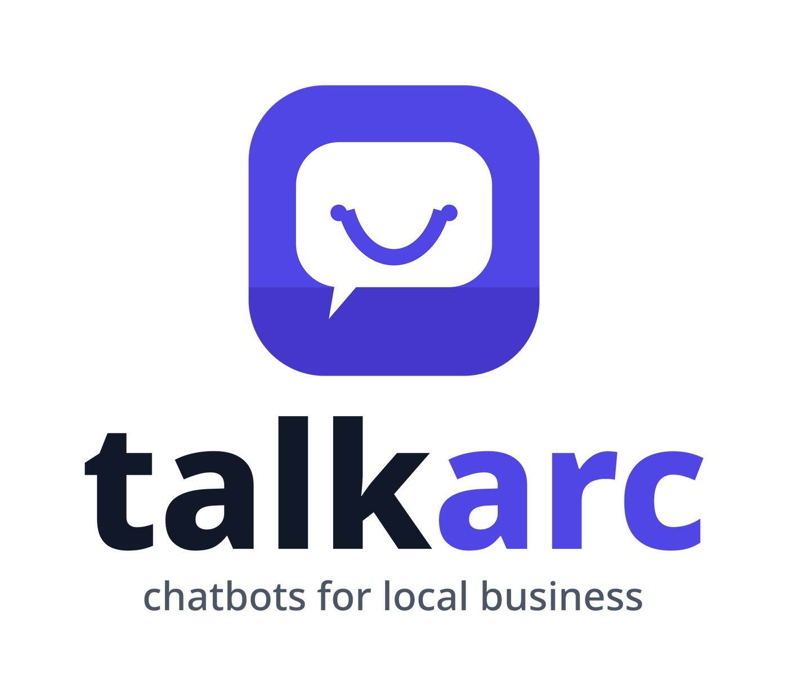

A clear home for your business
Show your services, location, contact details, and what makes you worth choosing.
A SIMPLE DIGITAL START FOR YOUR BUSINESS
A clear website and a helpful chatbot, shaped around the questions your customers ask every day.
Built for local businesses. Designed to make the next step clear.
A fresh place to find what you need, learn what we do, and reach our team.
Explore services →Hi! What would you like to know?

ONE SIMPLE ONLINE PRESENCE
Give people the basics they need, then help them take the next step.
Show your services, location, contact details, and what makes you worth choosing.
Help visitors find information about your services and how to reach you.
We work with you to shape the content and prepare your online presence.
FROM FIRST BRIEF TO FIRST DRAFT
We gather the right details, shape a website direction, and review it with you before launch.
Start a project brief →A STRAIGHTFORWARD START
A website plus chatbot for a simple start to your local business’s online presence.
Plan your project →TALKARC
Talkarc is an early-stage project building websites and chatbots for local businesses. We’ll be clear about what’s ready and what’s still being worked out.
Prepare a project brief →